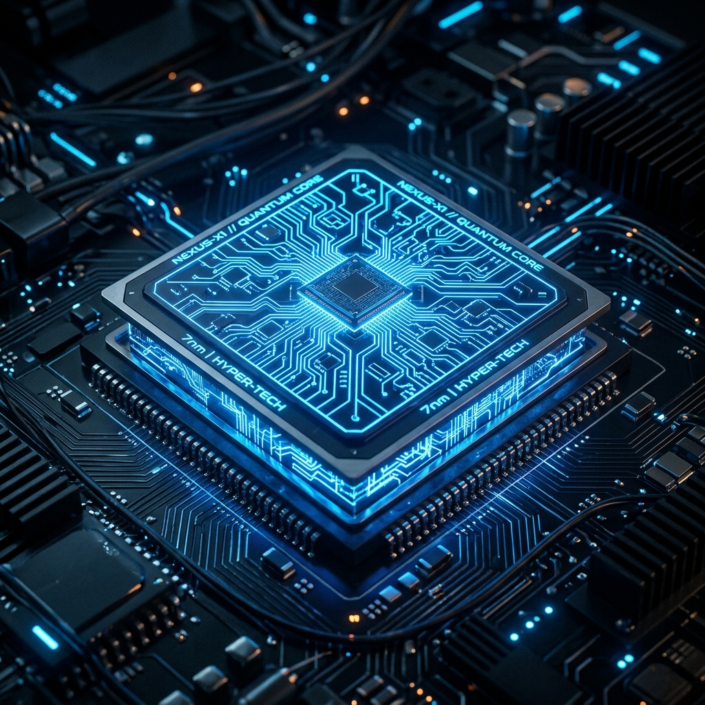

Procesor (CPU)
Central Processing Unit

Procesor (CPU - Central Processing Unit) je základní elektronická součást v počítači, která vykonává instrukce počítačového programu a zpracovává data. Bývá označován jako „mozek“ počítače.
Interpretuje, vykonává a řídí jednotlivé instrukce softwaru. Mezi klíčové parametry moderních procesorů patří:
- Počet jader: Fyzická jádra umožňují paralelní zpracování úloh. Dnešní procesory mívají od 4 do 16 (či více) jader.
- Taktovací frekvence: Rychlost, s jakou procesor pracuje, měřená v GHz (např. 3.5 GHz až 5.5 GHz v Boost režimu).
- Mezipaměť (Cache): Velmi rychlá paměť (L1, L2, L3) přímo v procesoru, která uchovává nejčastěji používaná data pro urychlení přístupu.